OpenEmulator
User Interface
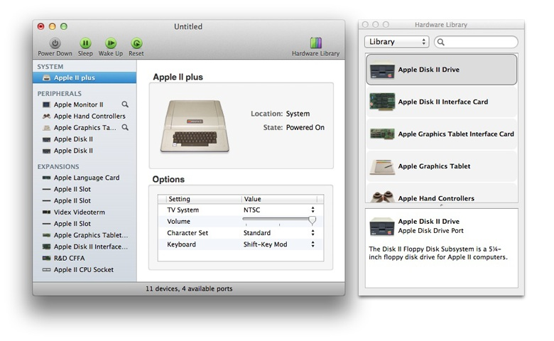
Systems
Screenshots of the supported emulations:
Apple II plus
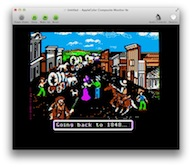 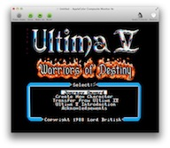 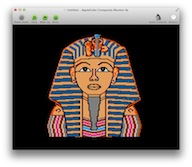 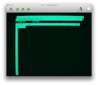{kind=link}
{kind=link}
{kind=link}
{kind=link}
Apple II
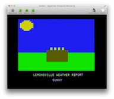 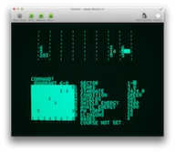 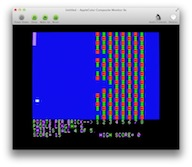 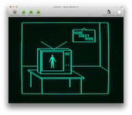{kind=link}
{kind=link}
{kind=link}
{kind=link}
Apple-1
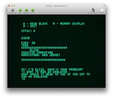 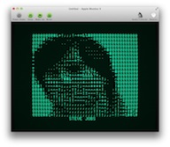 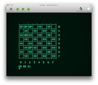{kind=link}
{kind=link}
{kind=link}
Video rendering
OpenEmulator uses advanced GPU-accelerated video rendering, allowing the emulation of legacy virtual monitors. The following effects are supported:
- Real-time NTSC/PAL decoding
- Standard monitor controls: brightness, contrast, saturation, hue
- Active video center/size controls
- Monitor shadow masks: triad, in-line, aperture grille, LCD, Bayer
- CRT barrel effect
- CRT dynamic scanline effect
- CRT phosphor persistence
- CRT center lighting
- Video bandwidth controls
- Composite color IRE levels
- Composite color luma and chroma bandwidth
- Composite color per-line variable color burst
- Composite color per-line U phase alternation
- Composite color Y'UV, Y'IQ (with standard I and Q bandwidth) and Sony decoders
The following screenshot shows the controls of an emulated studio monitor:

The PAL decoder in action. A raw frame:

And the decoded image (notice the cross luma/chroma artifacts resulting from old chroma decoding techniques):